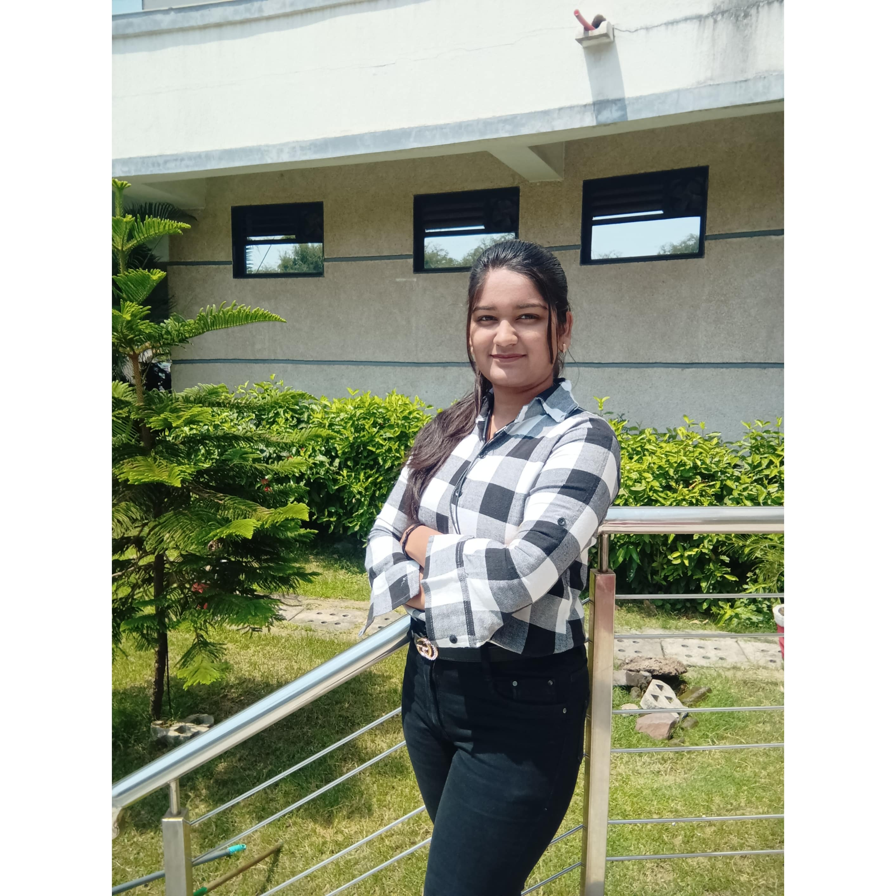

Kalash gupta

Email: kalashgupta2001@gmail.com
Mobile Number: 7067119268
Director of Software Development
Engineering robust, user-focused solutions driving breakthrough efficiency and bottom-line results
- Dynamic leader of software development teams offering 11 years of experience managing multimillion-dollar, mission-critical projects.
- Skilled in all phases of the software development lifecycle,
- Expert in translating business requirements into technical solutions
- Fanatical about quality, usability, security and scalability
EXPERTISE
- Application Development
- Service-Oriented Architecture (SOA)
- Enterprise Implementations
- Software Development Lifecycle (SDLC)
- Release Management
- Release Management
- B2B Integrations
- B2B Integrations
- Offshore Development Operations
- QA & UAT Management
- Team Building & Leadership
Professional Experience
ABC Inc. (2005 to Present) / DEF Inc.(2004 to 2008) -- Sometown, GA
ABC is a globble financial services firm that acquired DEF in 2008.
Director of Software Development, 2010 to Present
Senior Software Developer, 2008 to 2010
Software Developer / Tester, 2004 to 2008
Advanced through several promotions, culminating in present director-level role overseeing firm's software development activities. Manage a $4.5M R&D budget a cradle-to-grave oversight of software project management, leading the research, design, development, documentation, testing and rollout of enterprise applications.
Accomplishments
- Designed many software solutions driving continuous improvement to processes, systems, work flow and customer responsiveness.
- Mentored development teams in Agile SDLC and RAD best practices. Ensured the release of premium-quality applications that provided intuitive and secure
- Delivered new or enhanced developments
- Web-based customer data-entry applications
- software that automated customer loan data collection and processing functions
- systems for securely handling electronic funds transfers
Project Result
Served as project manager, lead developer and/or team member on dozens of application development projects. Delivered technology solutions.
- Automated processes to resolve business challenges, such as ever-fluctuating currency exchange and bank interest rates (15+ country)detection.
- Minimized system outages, saving an estimated $1.2M annually.
- Accelerated the lending approval process by 35%.
- Reduced payroll by hundreds of thousands of dollars by automating functions that previously required manual data entry.
-
Heightened security of electronic funds transfers and securities pooling. Decreased monthly error rates to all-time lows (from 1.2% to 0.02%).
- Streamlined the underwriting and review of government loans.
Technology Summary
Languages: C++, c#, Java, Visual Basic
Development Tools, Methodologies & Environments: Rapid Application Design (RAD), Object-Oriented Analysis & Design (OOAD), Integrated Software Development, Microsoft Visual Studio
Software: TIBCO, IBM WebSphere MQ, Apache, Business Objects, JBoss, Oracle WebLogic Server Systems: Unix, Windows, VAX/VM
Databases: Oracle, Sybase, Access
EDUCATION
MS in Information Systems Texas A&M - CollegeStation, TX
BS in Computer Science Osmania University - TS, India
CERTIFICATIONS
MCSD, Microsoft Certified Solution Developer
MCAD, Microsoft Certified Applications Developer
CMST, Certified Manager of Software Testing